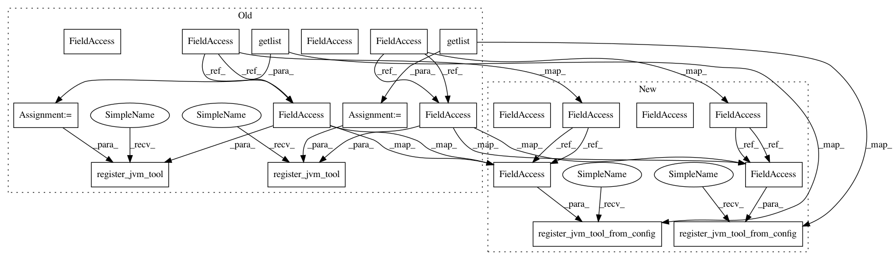

7df721222b91950481c2ca120cbef55d8798a245,src/python/pants/backend/jvm/tasks/jvm_compile/java/java_compile.py,JavaCompile,__init__,#JavaCompile#,86
Before Change
self._depfile = os.path.join(self._analysis_dir, "global_depfile")
self._jmake_bootstrap_key = "jmake"
external_tools = self.context.config.getlist("java-compile",
"jmake-bootstrap-tools",
default=["//:jmake"])
self.register_jvm_tool(self._jmake_bootstrap_key, external_tools)
self._compiler_bootstrap_key = "java-compiler"
compiler_bootstrap_tools = self.context.config.getlist("java-compile",
"compiler-bootstrap-tools",
default=["//:java-compiler"])
self.register_jvm_tool(self._compiler_bootstrap_key, compiler_bootstrap_tools)
self.configure_args(args_defaults=_JAVA_COMPILE_ARGS_DEFAULT,
warning_defaults=_JAVA_COMPILE_WARNING_ARGS_DEFAULT,
no_warning_defaults=_JAVA_COMPILE_WARNING_ARGS_DEFAULT)
After Change
self._depfile = os.path.join(self._analysis_dir, "global_depfile")
self._jmake_bootstrap_key = "jmake"
self.register_jvm_tool_from_config(self._jmake_bootstrap_key, self.context.config,
ini_section="java-compile",
ini_key="jmake-bootstrap-tools",
default=["//:jmake"])
self._compiler_bootstrap_key = "java-compiler"
self.register_jvm_tool_from_config(self._compiler_bootstrap_key, self.context.config,
ini_section="java-compile",
ini_key="compiler-bootstrap-tools",
default=["//:java-compiler"])
self.configure_args(args_defaults=_JAVA_COMPILE_ARGS_DEFAULT,
warning_defaults=_JAVA_COMPILE_WARNING_ARGS_DEFAULT,
no_warning_defaults=_JAVA_COMPILE_WARNING_ARGS_DEFAULT)
In pattern: SUPERPATTERN
Frequency: 3
Non-data size: 20
Instances
Project Name: pantsbuild/pants
Commit Name: 7df721222b91950481c2ca120cbef55d8798a245
Time: 2014-10-15
Author: zundel@squareup.com
File Name: src/python/pants/backend/jvm/tasks/jvm_compile/java/java_compile.py
Class Name: JavaCompile
Method Name: __init__
Project Name: pantsbuild/pants
Commit Name: 7df721222b91950481c2ca120cbef55d8798a245
Time: 2014-10-15
Author: zundel@squareup.com
File Name: src/python/pants/backend/jvm/tasks/ide_gen.py
Class Name: IdeGen
Method Name: __init__
Project Name: pantsbuild/pants
Commit Name: 7df721222b91950481c2ca120cbef55d8798a245
Time: 2014-10-15
Author: zundel@squareup.com
File Name: src/python/pants/backend/jvm/tasks/benchmark_run.py
Class Name: BenchmarkRun
Method Name: __init__
Project Name: pantsbuild/pants
Commit Name: 7df721222b91950481c2ca120cbef55d8798a245
Time: 2014-10-15
Author: zundel@squareup.com
File Name: src/python/pants/backend/jvm/tasks/jvm_compile/java/java_compile.py
Class Name: JavaCompile
Method Name: __init__